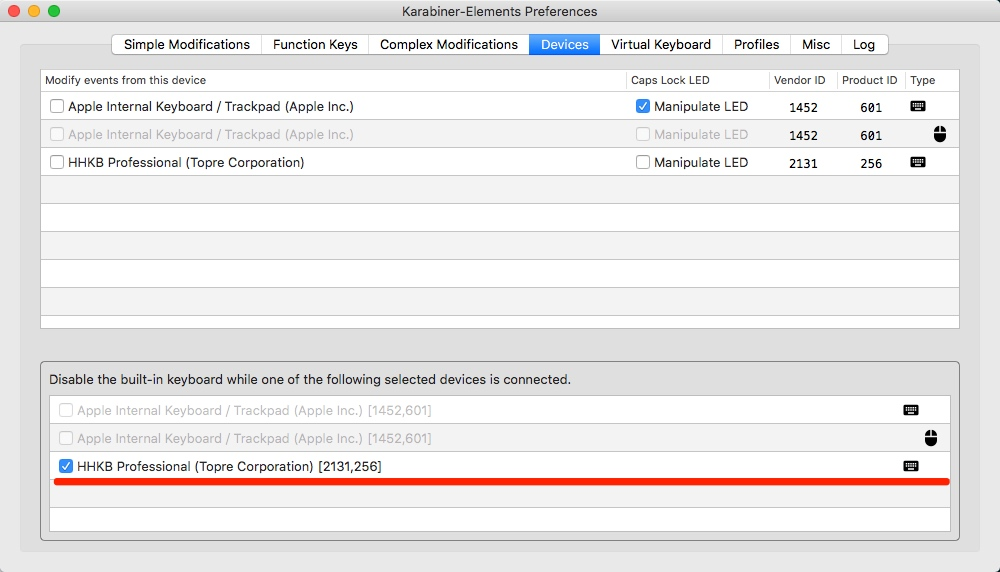

<!DOCTYPE HTML>
<html>
<head>
	<meta charset="utf-8">
	<title>  
	  
  	xuzhihua blog
  	
	</title>

  <meta name="HandheldFriendly" content="True">
  <meta name="MobileOptimized" content="320">
  <meta name="viewport" content="width=device-width, initial-scale=1">

	<link href="atom.xml" rel="alternate" title="xuzhihua blog" type="application/atom+xml">

	<link href="asset/stylesheets/screen.css" media="screen, projection" rel="stylesheet" type="text/css">
	<link href="asset/stylesheets/font-awesome.min.css" media="screen, projection" rel="stylesheet" type="text/css">
	<script src="asset/javascripts/jquery.min.js"></script>
	<script src="asset/highlightjs/highlight.pack.js"></script>
	<link href="asset/highlightjs/styles/solarized_dark.css" media="screen, projection" rel="stylesheet" type="text/css">
<script>hljs.initHighlightingOnLoad();</script>

	<!--[if lt IE 9]><script src="asset/javascripts/html5.js"></script><![endif]-->
	<!-- <link href='http://fonts.googleapis.com/css?family=Nunito:400,300,700' rel='stylesheet' type='text/css'> -->
	<style type="text/css">
/* latin */
@font-face {
  font-family: 'Nunito';
  font-style: normal;
  font-weight: 300;
  src: local('Nunito-Light'), url(asset/font/1TiHc9yag0wq3lDO9cw0voX0hVgzZQUfRDuZrPvH3D8.woff2) format('woff2');
  unicode-range: U+0000-00FF, U+0131, U+0152-0153, U+02C6, U+02DA, U+02DC, U+2000-206F, U+2074, U+20AC, U+2212, U+2215, U+E0FF, U+EFFD, U+F000;
}
/* latin */
@font-face {
  font-family: 'Nunito';
  font-style: normal;
  font-weight: 400;
  src: local('Nunito-Regular'), url(asset/font/6TbRXKWJjpj6V2v_WyRbMX-_kf6ByYO6CLYdB4HQE-Y.woff2) format('woff2');
  unicode-range: U+0000-00FF, U+0131, U+0152-0153, U+02C6, U+02DA, U+02DC, U+2000-206F, U+2074, U+20AC, U+2212, U+2215, U+E0FF, U+EFFD, U+F000;
}
/* latin */
@font-face {
  font-family: 'Nunito';
  font-style: normal;
  font-weight: 700;
  src: local('Nunito-Bold'), url(asset/font/TttUCfJ272GBgSKaOaD7KoX0hVgzZQUfRDuZrPvH3D8.woff2) format('woff2');
  unicode-range: U+0000-00FF, U+0131, U+0152-0153, U+02C6, U+02DA, U+02DC, U+2000-206F, U+2074, U+20AC, U+2212, U+2215, U+E0FF, U+EFFD, U+F000;
}
	</style>
	
	<style type="text/css">
	.container .left-col{ opacity: 1;}
	#pagenavi a{ font-size: 1.3em;}
	#pagenavi .next:before{ top: 3px;}
	#pagenavi .prev:before{ top: 3px;}
	.container .mid-col .mid-col-container #content .archives .title{ font-size: 1.5em;}
	.container .mid-col .mid-col-container #content article{ padding: 15px 0px;}
	#header .subtitle {
		line-height: 1.2em;
		padding-top: 8px;
	}
	article pre{ background: none; border: none; padding: 0;}
	article .entry-content{text-align: left;}
	.share-comment{ padding: 25px 0px; clear: both;}
	hr{ margin: 20px 0px;border: 0; border-top:solid 1px #ddd;}
	</style>
  

</head>


<body>
	<div class="container">
		<div class="left-col">
			<div class="intrude-less">
				<header id="header" class="inner">
				 
					
					<h1><a href="index.html">xuzhihua blog</a></h1>
					<p class="subtitle"></p>
					<nav id="main-nav">
						<ul class="main">
						
						  <li id=""><a target="_self" href="index.html">[Home]</a></li>
						
						  <li id=""><a target="_self" href="archives.html">[All Archives]</a></li>
						
						  <li id=""><a target="_self" href="Mac.html">Mac</a></li>
						
						  <li id=""><a target="_self" href="OS.html">OS</a></li>
						
						  <li id=""><a target="_self" href="Algorithms.html">Algorithms</a></li>
						
						  <li id=""><a target="_self" href="NetWork.html">NetWork</a></li>
						
						  <li id=""><a target="_self" href="Apache.html">Apache</a></li>
						
						  <li id=""><a target="_self" href="Nginx.html">Nginx</a></li>
						
						  <li id=""><a target="_self" href="Oracle.html">Oracle</a></li>
						
						  <li id=""><a target="_self" href="JVM.html">JVM</a></li>
						
						  <li id=""><a target="_self" href="Redis.html">Redis</a></li>
						
						  <li id=""><a target="_self" href="Zookeeper.html">Zookeeper</a></li>
						
						  <li id=""><a target="_self" href="Java.html">Java</a></li>
						
						  <li id=""><a target="_self" href="JavaScript.html">JavaScript</a></li>
						
						  <li id=""><a target="_self" href="Read.html">Read</a></li>
						
						  <li id=""><a target="_self" href="Video.html">Video</a></li>
						
						  <li id=""><a target="_self" href="jdkSource.html">jdkSource</a></li>
						
						  <li id=""><a target="_self" href="AboutMe.html">AboutMe</a></li>
						
						</ul>
					</nav>

					<nav id="sub-nav">
						<div class="social">


								

								<a class="rss" href="atom.xml" title="RSS">RSS</a>
							
						</div>
					</nav>
				</header>				
			</div>
		</div>	
		<div class="mid-col">
			<div class="mid-col-container"> <div id="content" class="inner">
<div itemscope itemtype="http://schema.org/Blog">


	<article class="post" itemprop="blogPost" itemscope itemtype="http://schema.org/BlogPosting">
		<div class="meta">
			<div class="date">
				<time datetime="2019-01-03T14:24:57+08:00" itemprop="datePublished">2019/1/3</time>
			</div>
			<div class="tags">posted in 
			
			    <a class='category' href='Redis.html'>Redis</a>&nbsp;
			 
			</div>
		</div>
		<h1 class="title" itemprop="name"><a href="15464966977992.html" itemprop="url">
		Mac 本地搭建 redis 集群服务</a></h1>
		<div class="entry-content" itemprop="articleBody">
			
			

			 
			<a href="15464966977992.html#more" class="more-link">Read on &rarr;</a>
    		
			
		</div>

	</article>
 
	<article class="post" itemprop="blogPost" itemscope itemtype="http://schema.org/BlogPosting">
		<div class="meta">
			<div class="date">
				<time datetime="2019-01-03T14:08:36+08:00" itemprop="datePublished">2019/1/3</time>
			</div>
			<div class="tags">posted in 
			
			    <a class='category' href='Redis.html'>Redis</a>&nbsp;
			 
			</div>
		</div>
		<h1 class="title" itemprop="name"><a href="15464957164784.html" itemprop="url">
		Mac 本地搭建 redis 单机服务</a></h1>
		<div class="entry-content" itemprop="articleBody">
			
			

			 
			<a href="15464957164784.html#more" class="more-link">Read on &rarr;</a>
    		
			
		</div>

	</article>
 
	<article class="post" itemprop="blogPost" itemscope itemtype="http://schema.org/BlogPosting">
		<div class="meta">
			<div class="date">
				<time datetime="2018-12-17T22:43:18+08:00" itemprop="datePublished">2018/12/17</time>
			</div>
			<div class="tags">posted in 
			
			    <a class='category' href='Zookeeper.html'>Zookeeper</a>&nbsp;
			 
			</div>
		</div>
		<h1 class="title" itemprop="name"><a href="15450577988698.html" itemprop="url">
		Mac 本地搭建 zookeeper 单机服务</a></h1>
		<div class="entry-content" itemprop="articleBody">
			
			

			 
			<a href="15450577988698.html#more" class="more-link">Read on &rarr;</a>
    		
			
		</div>

	</article>
 
	<article class="post" itemprop="blogPost" itemscope itemtype="http://schema.org/BlogPosting">
		<div class="meta">
			<div class="date">
				<time datetime="2018-06-19T21:03:04+08:00" itemprop="datePublished">2018/6/19</time>
			</div>
			<div class="tags">posted in 
			
			    <a class='category' href='Docker.html'>Docker</a>&nbsp;
			 
			</div>
		</div>
		<h1 class="title" itemprop="name"><a href="RUN%20vs%20CMD%20vs%20ENTRYPOINT.html" itemprop="url">
		RUN vs CMD vs ENTRYPOINT</a></h1>
		<div class="entry-content" itemprop="articleBody">
			
			<p><a href="http://www.cnblogs.com/CloudMan6/p/6875834.html">RUN vs CMD vs ENTRYPOINT - 每天5分钟玩转 Docker 容器技术（17）</a></p>


			 
			<a href="RUN%20vs%20CMD%20vs%20ENTRYPOINT.html#more" class="more-link">Read on &rarr;</a>
    		
			
		</div>

	</article>
 
	<article class="post" itemprop="blogPost" itemscope itemtype="http://schema.org/BlogPosting">
		<div class="meta">
			<div class="date">
				<time datetime="2018-06-19T14:04:45+08:00" itemprop="datePublished">2018/6/19</time>
			</div>
			<div class="tags">posted in 
			
			    <a class='category' href='Java.html'>Java</a>&nbsp;
			 
			</div>
		</div>
		<h1 class="title" itemprop="name"><a href="idea%20JRebel%20%E6%BF%80%E6%B4%BB.html" itemprop="url">
		idea JRebel 激活</a></h1>
		<div class="entry-content" itemprop="articleBody">
			
			<p><a href="http://blog.lanyus.com/archives/317.html">撸了个反代工具, 可用于激活JRebel</a><br/>
<a href="http://blog.lanyus.com/archives/337.html">JRebel 2018.1使用反代失败解决</a></p>

<h2 id="toc_0">通过 docker 运行 激活服务器容器</h2>

<pre><code class="language-zsh">#下载镜像
docker pull ilanyu/golang-reverseproxy
#运行容器
docker run -d -p 8888:8888 ilanyu/golang-reverseproxy

</code></pre>

<h2 id="toc_1">idea 的 JRebel 激活服务器</h2>

<p>填入下面地址<br/>
<a href="http://127.0.0.1:8888/88414687-3b91-4286-89ba-2dc813b107ce">http://127.0.0.1:8888/88414687-3b91-4286-89ba-2dc813b107ce</a><br/>
邮箱随便填写</p>

<p>88414687-3b91-4286-89ba-2dc813b107ce 这一串是 guid，如果上面地址不行，使用网站<br/>
<a href="https://www.guidgen.com/">https://www.guidgen.com/</a> 再生成一串放进去</p>

<h2 id="toc_2">在线免安装激活服务器</h2>

<p><a href="http://139.199.89.239:1008/88414687-3b91-4286-89ba-2dc813b107ce">http://139.199.89.239:1008/88414687-3b91-4286-89ba-2dc813b107ce</a></p>

<p>如果出现激活过期的情况，请重新生成guid，替换原来的guid即可</p>

<p>邮箱随便写，即可激活。</p>


			
			
		</div>

	</article>
 
	<article class="post" itemprop="blogPost" itemscope itemtype="http://schema.org/BlogPosting">
		<div class="meta">
			<div class="date">
				<time datetime="2018-05-31T09:38:23+08:00" itemprop="datePublished">2018/5/31</time>
			</div>
			<div class="tags">posted in 
			
			    <a class='category' href='Oracle.html'>Oracle</a>&nbsp;
			 
			</div>
		</div>
		<h1 class="title" itemprop="name"><a href="15277307033046.html" itemprop="url">
		游标</a></h1>
		<div class="entry-content" itemprop="articleBody">
			
			<pre><code class="language-sql">#在 BEGIN 之前定义变量 v_smoke_flag 
#在 BEGIN 之前定义游标
cursor cur_smoke_flag is
    select smoke_flag
    from uw_apply_info uai, uw_apply_product uap
    where uai.apply_no = uap.apply_no
    and uap.product_code = p_product_info.product_code
    and uai.policy_no = p_policy_no;
    
#在 BEGIN 之后使用游标  v_smoke_flag可以不用定义 直接使用
open cur_smoke_flag;
fetch cur_smoke_flag into v_smoke_flag;
close cur_smoke_flag;
</code></pre>


			
			
		</div>

	</article>
 
	<article class="post" itemprop="blogPost" itemscope itemtype="http://schema.org/BlogPosting">
		<div class="meta">
			<div class="date">
				<time datetime="2018-05-26T13:03:13+08:00" itemprop="datePublished">2018/5/26</time>
			</div>
			<div class="tags">posted in 
			
			    <a class='category' href='Docker.html'>Docker</a>&nbsp;
			 
			</div>
		</div>
		<h1 class="title" itemprop="name"><a href="%E6%AF%8F%E5%A4%A95%E5%88%86%E9%92%9F%E7%8E%A9%E8%BD%AC%20Docker.html" itemprop="url">
		每天5分钟玩转 Docker</a></h1>
		<div class="entry-content" itemprop="articleBody">
			
			<blockquote>
<p><a href="http://www.cnblogs.com/CloudMan6/p/6693772.html">每天5分钟玩转 Docker</a></p>
</blockquote>


			 
			<a href="%E6%AF%8F%E5%A4%A95%E5%88%86%E9%92%9F%E7%8E%A9%E8%BD%AC%20Docker.html#more" class="more-link">Read on &rarr;</a>
    		
			
		</div>

	</article>
 
	<article class="post" itemprop="blogPost" itemscope itemtype="http://schema.org/BlogPosting">
		<div class="meta">
			<div class="date">
				<time datetime="2018-05-19T01:49:17+08:00" itemprop="datePublished">2018/5/19</time>
			</div>
			<div class="tags">posted in 
			
			    <a class='category' href='Tmux.html'>Tmux</a>&nbsp;
			 
			</div>
		</div>
		<h1 class="title" itemprop="name"><a href="15266657573716.html" itemprop="url">
		Tmux 入门</a></h1>
		<div class="entry-content" itemprop="articleBody">
			
			<blockquote>
<p>from 阿光的 tmux 的配置</p>
</blockquote>

<h2 id="toc_0">外接键盘时禁用开启 mac 内置键盘</h2>

<ol>
<li><p>命令方式:</p>

<ol>
<li><p>禁用键盘</p>

<p><code>sudo kextunload /System/Library/Extensions/AppleUSBTopCase.kext/Contents/PlugIns/AppleUSBTCKeyboard.kext/</code></p></li>
<li><p>启用键盘  --  启用失败</p>

<p><code>sudo kextload /System/Library/Extensions/AppleUSBTopCase.kext/Contents/PlugIns/AppleUSBTCKeyboard.kext/https://pqrs.org/osx/karabiner/history.html.en</code></p></li>
<li><p>软件方式：</p></li>
<li><p>karabiner-elements   进入 Preferences-devices <br/>
</p></li>
</ol></li>
</ol>

<h2 id="toc_1">命令</h2>

<ul>
<li><code>tmux ls</code> (iterm)查看 tmux 下所有的 session</li>
<li><code>tmux a -t SessionName</code> = <code>tmux attach -t SessionName</code>(iterm)attach 进名字为 sessionName 的会话 </li>
<li><code>tmux new -s SessionName</code> (iterm)新打开一个 名字为 TmuxName 的 Session，并进入</li>
<li><code>tmux new -s SessionName -d</code> (iterm)后台新打开一个 名字为 TmuxName 的 Session，不进入</li>
<li></li>
<li><code>ctrl-q</code> tmux 的命令<em>前置键</em>， 以 ctrl-q 开头的命令都是在 tmux 界面中执行命令
*</li>
<li><code>ctrl-q, r</code> 重新载入 tmux 的配置文件，使其生效
*</li>
<li><code>ctrl + d</code> 关闭当前 pane；重复执行，继续关闭 pane；若 pane 没有了，则关闭 window；若 window 没有了，则关闭 session，相当于退出将 session exit，不能再访问这个 session</li>
<li><code>ctrl-q, x</code> 关闭当前 pane</li>
<li><code>ctrl-q, &amp;</code> 关闭当前 window，包括当前 window 下的所有 pane</li>
<li><code>ctrl-q, d</code> 将当前 session detached(改 tmux 可以还在后台运行)，返回到终端</li>
<li></li>
<li><code>ctrl-q, $</code> 重命名当前 session 的名字</li>
<li><code>ctrl-q, ,</code> 重命名当前 window 的名字，显示在状态栏上</li>
<li><code>ctrl-q, t</code> 在当前的 pane 中显示时间</li>
<li><code>ctrl-q, i</code> 在状态栏中显示当前 pane 的信息</li>
<li> </li>
<li><code>ctrl-q, s</code> 在当前 pane 显示所有 session</li>
<li><code>ctrl-q, s, hjkl, enter</code> 在当前 pane 显示所有 session， hjkl:左下右上选择 session，enter 进入 session</li>
<li><code>ctrl-q, w</code> 在当前 pane 查看 tmux 所有的 session，window，pane</li>
<li><code>ctrl-q, w, hjkl, enter</code> 查看所有 session、window、pane、 hjkl: 左下右上选择， enter:进入所选择项的窗口</li>
<li><code>ctrl-q, f, enter, hjkl</code> 进入所有 session、window、pane 面板，进行左下右上选择进入</li>
<li></li>
<li><code>ctrl-q, q</code> 显示当前 window 中 pane 的编号</li>
<li><code>ctrl-q, num</code> 在当前 session 中，将窗口切换到 num 对应的窗口</li>
<li><code>ctrl-q, &#39;, num, enter</code> 在当前 session 中，将窗口切换到 索引为 num 的窗口</li>
<li><code>ctrl-q, ctrl-q</code> 在最近使用的两个 pane 中，来回切换</li>
<li><code>ctrl-q, n</code> 在当前 session 中，将 session 窗口切换到 下一个窗口</li>
<li><code>ctrl-q, %</code> 将当前 pane 左右分屏</li>
<li><code>ctrl-q, &quot;</code> 将当前 pane 上下分屏</li>
<li><code>ctrl-q, z</code> 多 pane 情况下，将当前所在的 pane 最大化显示，再执行一次，切换回之前的状态</li>
<li><code>ctrl-q, m</code> 多 pane 情况下，凸显当前所在的 pane，在执行一下，取消凸显状态</li>
<li><code>ctrl-q, hjkl</code> 在当前 window 下的 pane 中，hjkl:左下右上进行切换 分屏</li>
<li><code>ctrl-q, o</code> 在当前 window 中，切换到下一个 pane</li>
<li><code>ctrl-q, ;</code> 在当前 window 中，切换到上一个 pane</li>
<li><code>ctrl-q, ctrl-o</code> 调换窗口位置，类似于 vim 中的 ctrl-w</li>
<li><code>ctrl-q, !</code> 将当前 pane 变为新窗口</li>
<li></li>
<li><code>ctrl-q, [</code> [: 进入 <em>vi</em> 状态</li>
<li><code>ctrl-q, [, hjkl</code> hjkl: 左下右上移动光标</li>
<li><code>ctrl-q, [, v, hjkl, y</code> (tmux) [:进入 vi 状态，v:从当前光标位置进入<em>选取</em>模式， hjkl:移动选取位置，y:复制前面选取的内容(放入粘贴板)(注:可以多次进行选取，复制入粘贴板)</li>
<li><code>ctrl-q, p</code> 将粘贴板中的最新一条内容 粘贴出来</li>
<li><code>ctrl-q, shift+p</code> = <code>ctrl-q, =</code> 进入粘贴板，查看所有粘贴内容</li>
<li><code>ctrl-q, shift+p, hjkl, enter</code> 进入粘贴板，hjkl:左下右上选择粘贴记录，enter:选取当前记录粘贴到之前进入粘贴板的位置</li>
</ul>


			
			
		</div>

	</article>
  

</div>
<nav id="pagenavi">
	 
	 <a class="next" href="all_1.html">Next</a> 
	<div class="center"><a href="archives.html">Blog Archives</a></div>

</nav>

</div>


        </div>
			<footer id="footer" class="inner">Copyright &copy; 2014
Powered by <a target="_blank" href="http://www.mweb.im">MWeb</a> &nbsp;&nbsp; 
Theme by <a href="http://shashankmehta.in/archive/2012/greyshade.html">Shashank Mehta</a>
      </footer>
		</div>
	</div>

  
    


</body>
</html>